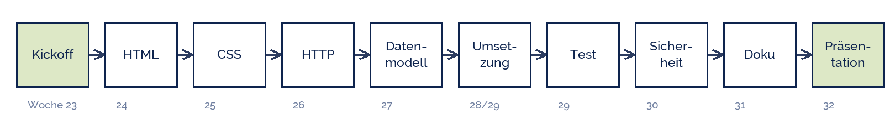

yoshitaka2
yoshitaka2
Good morning!
Nur das Schöne wird die Welt retten!
Fjodor Dostojewski
Nicht verzagen, Doc Alvers fragen!
Informatik — FOS 12
Projekt Webtechnologie
Kickoff: Phasen, Teams, Themen — 20 Stunden bis zur eigenen Webpräsenz
Nicht verzagen, Doc Alvers fragen!
Kapitel 01
Das Projekt
Was in den nächsten zehn Wochen entsteht
Nicht verzagen, Doc Alvers fragen!
Die Eckdaten
| Festlegung | |
|---|---|
| Umfang | 20 Unterrichtsstunden, Wochen 23 bis 32 (KW 8 bis KW 18) |
| Team | 3 bis 4 Personen, feste Rollen, gemeinsame Verantwortung |
| Produkt | eine Webpräsenz zu einem selbst gewählten Thema, mit Datenbankanbindung |
| Dokumentation | Projekttagebuch, Datenmodell, Testprotokoll, Quellenangaben |
| Abschluss | Präsentation in Woche 32 — Produkt, Arbeitsweise und Ergebnisse |
| Bewertung | Produkt, Prozess und Präsentation zu gleichen Teilen |
Das Projekt ist fächerverbindend: das Thema darf aus eurer Fachrichtung kommen
Es schließt an LB 1 (Datenbanken) und LB 2 (Algorithmen) an — nichts davon ist vergessen
Nicht verzagen, Doc Alvers fragen!
Der Fahrplan
Jede Woche hat ein Ergebnis, das am Ende der Stunde vorliegt — keine Woche ohne Zwischenstand
Zwei Wochen sind Umsetzung — die Zeit reicht nur, wenn der Entwurf steht
Der Osterferien-Schnitt liegt zwischen Woche 27 und 28: was vorher fertig ist, entspannt danach

Nicht verzagen, Doc Alvers fragen!
Kapitel 02
Das Team
Vier Rollen, eine Verantwortung
Nicht verzagen, Doc Alvers fragen!
Rollen im Projektteam
| Rolle | kümmert sich um | Ergebnis, das sie liefert |
|---|---|---|
| Projektleitung | Termine, Aufgabenliste, Absprachen | Projekttagebuch, Wochenplan |
| Design & Inhalt | Struktur, Texte, Gestaltung, Bilder | Seitenentwurf, Inhaltsverzeichnis |
| Technik & Daten | Datenmodell, Anbindung, Code | ER-Modell, Datenbankschema |
| Qualität & Test | Testfälle, Rechtschreibung, Quellen | Testprotokoll, Quellenliste |
Rollen heißen Zuständigkeit, nicht Alleinarbeit — programmiert wird gemeinsam
In einem Dreierteam übernimmt die Projektleitung die vierte Rolle mit
Legt heute fest, wer welche Rolle hat, und schreibt es ins Projekttagebuch
Nicht verzagen, Doc Alvers fragen!
Wie ihr euch organisiert
Wochenziel am Anfang der Stunde festlegen, am Ende prüfen — schriftlich, drei Zeilen genügen
Aufgabenliste mit Name und Termin: wer macht was bis wann?
Ein gemeinsamer Ordner, feste Dateinamen, keine Versionen wie „endgueltig_final_2“
Absprache zum Dateiaustausch: wer ändert wann welche Datei? Sonst überschreibt ihr euch
Bei Problemen früh melden — eine Woche vor der Abgabe ist zu spät
Nicht verzagen, Doc Alvers fragen!
Digitale Werkzeuge — Vorschlag
| wofür | Werkzeug | Hinweis |
|---|---|---|
| Code schreiben | VS Code (oder ein einfacher Editor) | keine Textverarbeitung! |
| Dateien teilen | Schulcloud-Ordner des Teams | feste Ordnerstruktur vereinbaren |
| Aufgaben verwalten | gemeinsame Tabelle oder Kanban-Brett | drei Spalten: offen, läuft, fertig |
| Tagebuch führen | ein Dokument, jede Stunde ein Absatz | Datum, Ziel, Ergebnis, Probleme |
| Testen | Browser + Entwicklertools (F12) | ab Woche 26 unser Hauptwerkzeug |
Wichtiger als die Werkzeugwahl ist, dass alle dasselbe benutzen
Nicht verzagen, Doc Alvers fragen!
Kapitel 03
Das Thema
Persönlich bedeutsam oder gesellschaftlich relevant
Nicht verzagen, Doc Alvers fragen!
Was ein gutes Projektthema ausmacht
Es interessiert euch wirklich — zehn Wochen sind lang
Es hat Daten, die sich in Tabellen fassen lassen: Personen, Termine, Angebote, Messwerte
Es ist klein genug: eine Idee, drei bis fünf Seiten, eine Datenbank mit 3–4 Tabellen
Es kommt ohne echte personenbezogene Daten aus — erfundene Beispieldaten genügen
Und es lässt sich in drei Sätzen erklären. Wenn nicht, ist es noch nicht scharf genug
Nicht verzagen, Doc Alvers fragen!
Themenideen nach Fachrichtung
| Richtung | Idee | Datenbank dahinter |
|---|---|---|
| Gesundheit | Ernährungstagebuch mit Nährwerttabelle | Lebensmittel, Mahlzeit, Nutzer |
| Gesundheit | Übungssammlung für den Rücken, nach Beschwerden filterbar | Übung, Muskelgruppe, Level |
| Sozialwesen | Beratungsangebote der Stadt, nach Thema durchsuchbar | Stelle, Thema, Öffnungszeit |
| Sozialwesen | Ehrenamtsbörse: wer sucht wen, wofür | Angebot, Bereich, Kontakt |
| Wirtschaft | Preisvergleich für Schulbedarf | Artikel, Anbieter, Preis |
| Wirtschaft | Vereinsverwaltung mit Mitgliedern und Beiträgen | Mitglied, Beitrag, Zahlung |
| frei | Musik-, Film- oder Spielearchiv des Kurses | Werk, Genre, Bewertung |
Das sind Anregungen — eine eigene Idee ist ausdrücklich erwünscht
Prüft die Idee sofort am Datenmodell: Welche drei Tabellen brauche ich mindestens?
Nicht verzagen, Doc Alvers fragen!
Kapitel 04
Bewertung
Damit von Anfang an klar ist, worauf es ankommt
Nicht verzagen, Doc Alvers fragen!
Worauf geachtet wird
| Bereich | Kriterien | Anteil |
|---|---|---|
| Produkt | Funktion, Datenmodell, sauberes HTML/CSS, Datenschutz umgesetzt | 40 % |
| Prozess | Planung, Tagebuch, Arbeitsteilung, Testprotokoll, Quellen | 30 % |
| Präsentation | Aufbau, Fachsprache, Demonstration, Antworten auf Nachfragen | 30 % |
Der Prozess zählt fast so viel wie das Produkt — dokumentiert von Anfang an, nicht am Ende
Ein ehrlich dokumentierter Fehlschlag ist mehr wert als eine schöne Seite ohne Nachweis
Die Kriterien für die Präsentation kennt ihr aus Klasse 11 — wir nutzen dieselben
Nicht verzagen, Doc Alvers fragen!
Fun Facts: das Web
Tim Berners-Lee schrieb 1989 am CERN einen Projektantrag; sein Chef notierte an den Rand: „vage, aber spannend“
Die erste Website der Welt läuft noch: info.cern.ch — sie erklärt, was das World Wide Web ist
Der erste Webserver war ein NeXT-Rechner mit dem Aufkleber: „Diese Maschine ist ein Server. NICHT AUSSCHALTEN!“
HTML hatte 1991 genau 18 Elemente — heute sind es über 110
Berners-Lee verzichtete bewusst auf ein Patent — deshalb gehört das Web niemandem
Nicht verzagen, Doc Alvers fragen!
Eure Aufgabe für diese Woche
Team bilden (3–4 Personen) und die vier Rollen verteilen
Thema festlegen und in drei Sätzen aufschreiben: Was? Für wen? Warum?
Drei Tabellen nennen, die eure Datenbank vermutlich braucht — grob, ohne Attribute
Projekttagebuch anlegen: Datum, Teilnehmende, Ziel, Ergebnis, offene Punkte
Werkzeuge festlegen und den gemeinsamen Ordner einrichten — nächste Woche wird getippt
Nicht verzagen, Doc Alvers fragen!